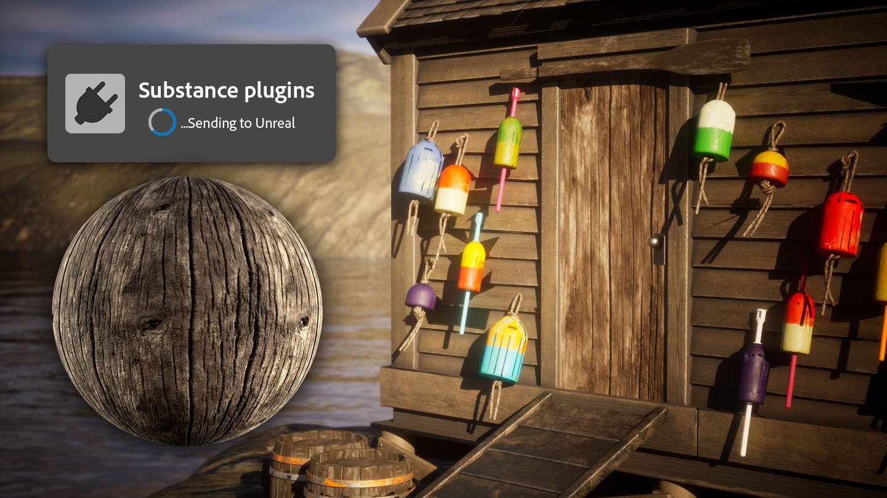

Substance 3D Sampler 4.5 introduces a Send-to for third party apps.
It allows to send assets from Sampler to a third party applications in one click, to avoid having to go through the manual export and import process and gaining time.
More info here.
Release date: 10 July 2024

(Released: 18 July 2024)
Added:
Fixed: